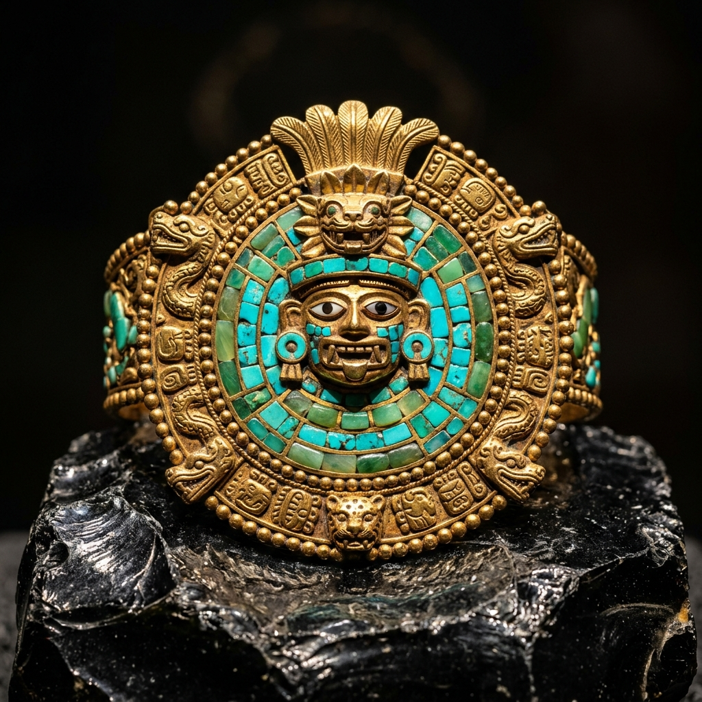
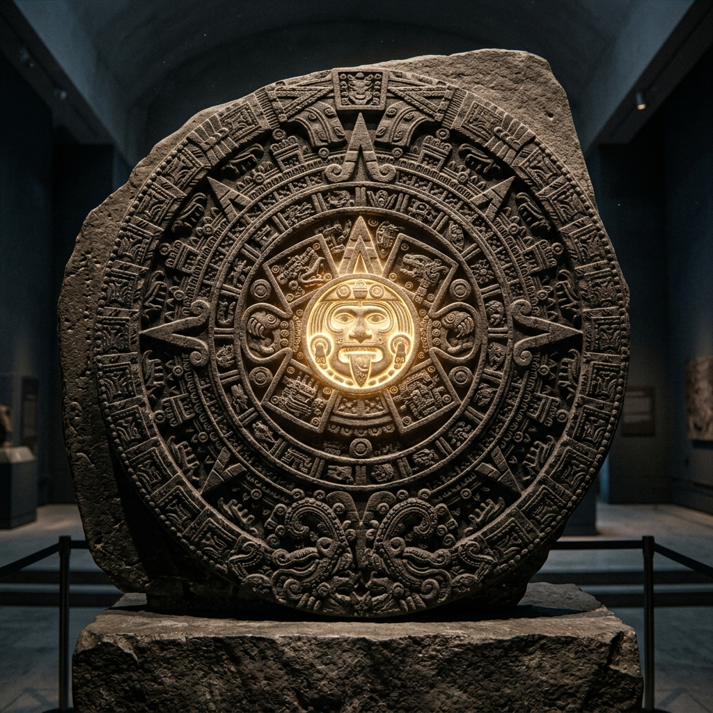

Contexto Histórico
Muito antes da ascensão do Império Asteca, a Mesoamérica foi moldada por duas culturas fundamentais: os Zapotecas e os Toltecas. Os Zapotecas dominaram o Vale de Oaxaca desde cerca de 500 a.C., construindo centros cerimoniais majestosos como Monte Albán e, posteriormente, Mitla. Mais ao norte, no planalto central do México, os Toltecas ascenderam por volta de 900 d.C., com sua capital em Tula (Tollan).
Enquanto os Zapotecas se destacavam pela precisão matemática e complexidade de seus rituais funerários, os Toltecas introduziram uma estética fortemente militarizada e o culto fundamental à Serpente Emplumada (Quetzalcoatl), influenciando profundamente todas as civilizações posteriores.

Representação da cerâmica e escultura ritual.
Manifestações Artísticas
A produção artística desses povos era grandiosa e servia a propósitos espirituais e de Estado:
- Urnas Funerárias (Zapotecas): Vasos de cerâmica extremamente detalhados, modelados na forma de deuses sentados (como Cocijo, deus da chuva), usados em ritos mortuários.
- Escultura Colossal (Toltecas): Criação dos impressionantes "Atlantes", guerreiros de pedra de quase 5 metros que sustentavam os telhados dos templos.
- O Chacmool (Toltecas): Figuras de pedra reclinadas segurando um recipiente sobre o ventre, usadas para oferendas e sacrifícios.
- Arquitetura Geométrica: O uso impressionante de mosaicos de pedra perfeitamente encaixados formando gregas (padrões geométricos) sem uso de argamassa, o ápice da arte de Mitla.
Técnicas e Materiais
Os artesãos toltecas e zapotecas (conhecidos como os mestres construtores) dominavam a matéria física com precisão:
- Trabalho em Pedra (Cantaria): Os Zapotecas cortavam blocos de calcário e rocha vulcânica com tanta perfeição matemática que criavam complexos mosaicos tridimensionais sem cimento.
- Cerâmica Modelada: A argila era esculpida à mão com apliques elaborados para representar cocares, joias e presas de divindades.
- Estuque e Pintura: As cidades não eram cinzas; quase todas as construções e esculturas eram cobertas com estuque e pintadas com cores vibrantes (vermelho profundo, ocre e azul).
Análise de Obra: Os Atlantes de Tula
Os Atlantes são o ícone máximo da cultura Tolteca. Esculpidos em pedra basáltica, são pilares antropomorfos que representam guerreiros de elite e encarnam o deus Quetzalcoatl em sua faceta militar (Tlahuizcalpantecuhtli).
Descrição Formal
Cada estátua é composta por quatro grandes blocos de pedra encaixados, medindo 4,6 metros de altura. Eles exibem uma postura rígida e frontal. Vestem um peitoral em forma de borboleta, um escudo solar nas costas, e seguram armas nas mãos, com a cabeça adornada por um cocar de penas rígido.
Interpretação e Significado
Eles funcionavam literalmente como pilares sustentando o teto do templo, uma metáfora visual poderosa do guerreiro como o sustentáculo do universo e da ordem cósmica. A arte tolteca marca o início da transição mesoamericana para um estilo mais austero, quadrado e focado no poder militar.

Releitura visual da arte monumental antiga.
Simbolismo e Cosmologia
O universo simbólico dessas culturas moldou o imaginário do México antigo:
- Quetzalcoatl: A Serpente Emplumada (pássaro e serpente), simbolizando a união do céu e da terra, da matéria e do espírito. Figura central trazida à proeminência pelos Toltecas.
- Cocijo e o Trovão: Para os Zapotecas, o deus da chuva e do relâmpago era a divindade principal. Suas máscaras combinavam traços de jaguar e serpente.
- Mosaicos de Mitla (Grecas): Os padrões geométricos nas paredes de Mitla não eram apenas enfeites, mas a representação estilizada do corpo da serpente e o fluxo contínuo da vida.
Arte, Sociedade e Poder
A distinção entre as duas culturas é clara em sua arte e sociedade: para os Zapotecas, a arte era voltada para o culto aos ancestrais e o mundo dos mortos. As tumbas elaboradas mostram uma sociedade focada na linhagem de sangue da elite.
Para os Toltecas, a arte tornou-se propaganda de estado e guerra. O aparecimento de tzompantlis (altares de caveiras) e estátuas de chacmool refletem uma religião forte e guerreira, estabelecendo o padrão que mais tarde seria herdado e amplificado pelos Astecas.
O Legado na Contemporaneidade
O impacto dos "Mestres Construtores" é eterno. O termo "Tolteca" tornou-se sinônimo de "artista erudito" até mesmo para os povos posteriores. Hoje, os famosos mosaicos de Mitla são repetidos na moda e na arquitetura mexicana contemporânea.
Além disso, o Chacmool inspirou diretamente grandes mestres da arte moderna, sendo a base declarada do famoso escultor modernista Henry Moore, que adaptou a figura reclinada tolteca para criar as suas emblemáticas esculturas fluidas do século XX.